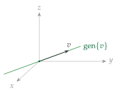
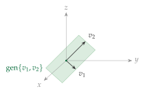
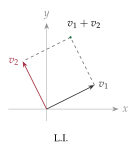
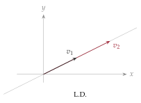

Combinación lineal, espacio generado e independencia lineal
Parcial 1 · Espacios vectoriales, bases y dimensión
Para arrancarCon solo dos colores primarios de luz no puedes fabricar todos los colores; con tres, sí. Esa es exactamente la pregunta de este capítulo: ¿qué alcanzan unos pocos vectores combinándolos?
En el capítulo anterior aprendimos a reconocer espacios vectoriales y subespacios, pero siempre «desde afuera»: dado un conjunto, comprobábamos si cumplía las propiedades de cerradura. En este capítulo construimos subespacios «desde adentro». Partimos de unos pocos vectores y, mediante las dos únicas operaciones que tiene un espacio vectorial —sumar y multiplicar por escalares—, fabricamos todo lo que ellos alcanzan. Ese conjunto de vectores alcanzables es el espacio generado, y resulta ser siempre un subespacio.
La segunda idea del capítulo es la contraria: preguntarnos cuándo un vector es «superfluo» porque ya lo obtenemos con los demás. Eso es la dependencia lineal. Ambas ideas se reducen, en la práctica, a resolver sistemas de ecuaciones lineales, y por eso las cuentas con la matriz aumentada y el método de Gauss-Jordan serán las protagonistas de casi todos los ejemplos. A lo largo del capítulo, los escalares son números reales.
Sea V un espacio vectorial. Un vector v∈V es combinación lineal de los vectores v1,v2,…,vk de V si existen escalares c1,c2,…,ck tales que v=c1v1+c2v2+⋯+ckvk. Los escalares c1,…,ck se llaman coeficientes de la combinación.
Por ejemplo, en R2 el vector (5,1) es combinación lineal de (1,0) y (0,1) con coeficientes 5 y 1, y también lo es de (1,1) y (1,−1) con coeficientes 3 y 2, pues 3(1,1)+2(1,−1)=(5,1). Observa que los coeficientes no tienen por qué ser únicos ni, por lo pronto, existir: decidir si existen y hallarlos es precisamente el problema que nos ocupa. Siempre existen en un caso: el vector cero es combinación lineal de cualquier lista de vectores, tomando todos los coeficientes iguales a cero.
Decidir si un vector es combinación lineal equivale a resolver un sistema
Cuando los vectores viven en Rn, la pregunta «¿existen c1,…,ck con v=c1v1+⋯+ckvk?» es, coordenada por coordenada, un sistema de n ecuaciones lineales con k incógnitas. El siguiente teorema lo dice con precisión y le da la forma matricial que usaremos en todos los ejemplos.
Teorema 2.2· Combinación lineal y sistemas de ecuaciones
Sean v1,…,vk y v vectores de Rn, y sea A la matriz n×k cuyas columnas son v1,…,vk. Entonces v es combinación lineal de v1,…,vk si y solo si el sistema Ax=v tiene solución. Además, los coeficientes de las combinaciones lineales posibles son exactamente las soluciones x=(c1,…,ck) de ese sistema.
Demostraciónmostrar
Escribimos A=(v1v2⋯vk) por columnas y x=(c1,…,ck)T. Por la definición del producto de una matriz por un vector, Ax es la suma de las columnas de A ponderadas por las componentes de x: Ax=c1v1+c2v2+⋯+ckvk. Por lo tanto, x=(c1,…,ck)T satisface Ax=v si y solo si v=c1v1+⋯+ckvk. Es decir, v es combinación lineal de v1,…,vk si y solo si existe una solución de Ax=v, y cada solución es una lista de coeficientes válida.
Para decidir si v es combinación lineal de v1,…,vk se forma la matriz aumentada (v1⋯vk∣v) y se lleva a su forma escalonada reducida por el método de Gauss-Jordan. Si aparece una fila del tipo (0⋯0∣b) con b=0, el sistema es inconsistente y vno es combinación lineal. Si no aparece, el sistema es consistente: con solución única hay una sola combinación posible; con variables libres hay infinitas.
El mismo método funciona en cualquier espacio vectorial de dimensión finita: en Mm×n se iguala entrada por entrada, y en Pn se igualan los coeficientes de cada potencia de x. En ambos casos resulta un sistema lineal en los coeficientes c1,…,ck.
Veamos el método en acción con los cuatro ejemplos de la clase.
Ejemplo 2.4· Un vector como combinación lineal de otros dos en R3
Muestra que en S={(1,3,1),(0,1,2),(1,0,−5)}, con v1=(1,3,1), v2=(0,1,2) y v3=(1,0,−5), el vector v1 es combinación lineal de v2 y v3.
Soluciónintenta primero
Buscamos c2,c3 con v1=c2v2+c3v3, es decir, (1,3,1)=c2(0,1,2)+c3(1,0,−5)=(c3,c2,2c2−5c3). Igualando coordenada a coordenada resulta el sistema ⎩⎨⎧c2+c3=1c2+c3=32c2−5c3=1 cuya matriz aumentada, con columnas v2, v3 y el término independiente v1, se reduce así: 01210−5131F1↔F210201−5311F3→F3−2F110001−531−5F3→F3+5F2100010310. El sistema es consistente y tiene solución única: c2=3, c3=1. Comprobamos: 3(0,1,2)+(1,0,−5)=(0,3,6)+(1,0,−5)=(1,3,1)=v1. Así, v1=3v2+v3, y v1 es combinación lineal de v2 y v3. (Guardemos esta igualdad: reaparecerá en la sección de independencia lineal.)
Muestra que en S={(0281),(0120),(−1132),(−2103)}={v1,v2,v3,v4}, el vector v1 es combinación lineal de v2, v3 y v4.
Soluciónintenta primero
Buscamos c2,c3,c4 tales que (0281)=c2(0120)+c3(−1132)+c4(−2103)=(−c3−2c4c2+c3+c42c2+3c32c3+3c4). Igualando las cuatro entradas (en el orden (1,1), (1,2), (2,1), (2,2)) obtenemos ⎩⎨⎧−c3−2c4=02c2+3c3=8c2+c3+c4=22c3+3c4=1 y reducimos su matriz aumentada: 0210−1312−20130821F1↔F3120013−1210−232801F2→F2−2F1100011−121−2−232401F1→F1−F2F3→F3+F2F4→F4−2F2100001003−2−47−244−7F3→−41F3100001003−217−24−1−7F1→F1−3F3F2→F2+2F3F4→F4−7F310000100001012−10. La solución es única: c2=1, c3=2, c4=−1. Verificamos: (0120)+2(−1132)−(−2103)=(0−2+21+2−12+6−00+4−3)=(0281). Por tanto v1=v2+2v3−v4 es combinación lineal de v2, v3 y v4.
Ejemplo 2.6· Escribir un vector como combinación lineal, con infinitas formas
En R3 escribe v=(1,1,1) como combinación lineal de los vectores del conjunto S={(1,2,3),(0,1,2),(−1,0,1)}={v1,v2,v3}.
Soluciónintenta primero
Planteamos c1v1+c2v2+c3v3=v. Las columnas de la matriz aumentada son v1, v2, v3 y v: 123012−101111F2→F2−2F1F3→F3−3F1100012−1241−1−2F3→F3−2F2100010−1201−10. La matriz ya está en forma escalonada reducida. El sistema equivalente es c1−c3=1, c2+2c3=−1, con c3 variable libre. Haciendo c3=t, c1=1+t,c2=−1−2t,c3=t,t∈R. Hay, pues, infinitas combinaciones lineales, una por cada valor de t. Con t=0 se obtiene v=v1−v2: en efecto, (1,2,3)−(0,1,2)=(1,1,1). Con t=−1 se obtiene v=v2−v3: (0,1,2)−(−1,0,1)=(1,1,1). Ambas son respuestas correctas.
Ejemplo 2.7· Un vector que no es combinación lineal
En R3, con el mismo conjunto S={(1,2,3),(0,1,2),(−1,0,1)} del ejemplo anterior, escribe w=(1,−2,2) como combinación lineal de los vectores de S.
Soluciónintenta primero
Repetimos la reducción con la nueva columna de términos independientes: 123012−1011−22F2→F2−2F1F3→F3−3F1100012−1241−4−1F3→F3−2F2100010−1201−47. La última fila dice 0⋅c1+0⋅c2+0⋅c3=7, que es imposible. El sistema es inconsistente y, por el teorema anterior, wno es combinación lineal de v1, v2 y v3.
Observación · Observación 2.8 · Qué está pasando geométricamente
En los dos ejemplos anteriores los tres vectores v1,v2,v3 cumplen v1−2v2+v3=0; es decir, uno de ellos depende de los otros dos, y los tres están en un mismo plano por el origen. Ese plano es x−2y+z=0 (un vector normal es v1×v2=(1,−2,1)). El vector (1,1,1) satisface esa ecuación (1−2+1=0) y por eso es combinación lineal; el vector (1,−2,2) no la satisface (1+4+2=7=0) y por eso no lo es. Nota que el número 7 que apareció en la fila inconsistente es exactamente el valor de x−2y+z en w.
2.2 Conjuntos generadores
Si tomamos todas las combinaciones lineales posibles de una lista de vectores, ¿obtenemos todo el espacio? Cuando la respuesta es afirmativa, decimos que la lista genera al espacio.
Un conjunto de vectores S={v1,v2,…,vk} de un espacio vectorial Vgenera a V (o es un conjunto generador de V) si todo vector de V se puede escribir como combinación lineal de los vectores de S. Es decir, para todo v∈V existen escalares c1,…,ck tales que v=c1v1+c2v2+⋯+ckvk.
Para probar que un conjunto genera hay que tomar un vector arbitrario del espacio y producir los coeficientes, en general como fórmulas en las componentes del vector. Lo hacemos en los cuatro espacios que más usaremos.
Muestra que S={(1,0,0),(0,1,0),(0,0,1)}={i,j,k} genera a R3.
Soluciónintenta primero
Sea (x,y,z) un vector cualquiera de R3. Entonces (x,y,z)=x(1,0,0)+y(0,1,0)+z(0,0,1), porque el lado derecho es (x,0,0)+(0,y,0)+(0,0,z)=(x,y,z). Así, los coeficientes son las propias coordenadas del vector. Por ejemplo, (π,e,ln2)=π(1,0,0)+e(0,1,0)+ln2(0,0,1). Como el vector era arbitrario, S genera a R3. Con el mismo argumento, los n vectores e1,…,en de Rn (con un 1 en la posición j y ceros en las demás) generan a Rn.
Un vector arbitrario de P2 es un polinomio p(x)=a0+a1x+a2x2 con a0,a1,a2∈R. Se escribe p(x)=a0⋅1+a1⋅x+a2⋅x2, que es una combinación lineal de 1, x, x2. Por lo tanto S genera a P2. El mismo razonamiento muestra que {1,x,x2,…,xn} genera a Pn.
Los polinomios de grado a lo sumo n se dejan generar por n+1 polinomios. Cambia todo si permitimos polinomios de cualquier grado. Sea P el espacio vectorial de todos los polinomios.
Ejemplo 2.12· Ningún conjunto finito de polinomios genera a P
Muestra que ningún conjunto finito de polinomios genera a P.
Soluciónintenta primero
Sea {p1,…,pk} un conjunto finito de polinomios. Si todos son el polinomio cero, sus combinaciones lineales son solo el polinomio cero y no generan nada más. Si no, sea m el mayor de los grados de los pi no nulos. El grado de una suma de polinomios no supera el mayor de los grados de los sumandos, y multiplicar por un escalar no aumenta el grado. Por eso toda combinación lineal c1p1+⋯+ckpk tiene grado a lo sumo m. En particular, el polinomio xm+1 de P no es combinación lineal de p1,…,pk. Así, ningún conjunto finito genera a P.
Muestra que S={(1,2,3),(0,1,2),(−2,0,1)}={v1,v2,v3} genera a R3.
Soluciónintenta primero
Estrategia.
Tomamos (a,b,c) arbitrario, resolvemos el sistema con términos independientes a,b,c sin fijarlos, y comprobamos que siempre tiene solución. Buscamos c1,c2,c3 con c1v1+c2v2+c3v3=(a,b,c): 123012−201abcF2→F2−2F1F3→F3−3F1100012−247ab−2ac−3aF3→F3−2F2100010−24−1ab−2aa−2b+cF3→−F3100010−241ab−2a−a+2b−cF1→F1+2F3F2→F2−4F3100010001−a+4b−2c2a−7b+4c−a+2b−c. (En la tercera fila, c−3a−2(b−2a)=a−2b+c.) Para cualquier(a,b,c) hay solución, dada por c1=−a+4b−2c,c2=2a−7b+4c,c3=−a+2b−c. Comprobación con (a,b,c)=(1,2,3): c1=−1+8−6=1, c2=2−14+12=0, c3=−1+4−3=0, o sea (1,2,3)=1⋅v1, como debe ser. Por tanto S genera a R3.
Muestra que S={(1000),(0010),(0100),(0001)} genera a M2×2.
Soluciónintenta primero
Sea A=(acbd) una matriz cualquiera. Entonces A=a(1000)+b(0010)+c(0100)+d(0001), pues la suma de la derecha es la matriz cuyas entradas son a,b,c,d en sus posiciones. Así, S genera a M2×2. De igual modo, las mn matrices Eij (con un 1 en la posición (i,j) y ceros en las demás) generan a Mm×n.
2.3 El espacio generado por un conjunto de vectores
Un conjunto S no tiene por qué generar todo el espacio; en general genera solo una parte de él. Esa parte es el objeto central de esta sección.
El espacio generado por un conjunto de vectores S={v1,v2,…,vk} de un espacio vectorial V es el conjunto de todas las combinaciones lineales de S: gen(S)=gen{v1,…,vk}={c1v1+c2v2+⋯+ckvk:c1,…,ck∈R}.
Con esta notación, la Definición 2.9 dice simplemente que S genera a V cuando gen(S)=V. En efecto, como S⊂V y V es cerrado bajo sumas y múltiplos escalares, siempre gen(S)⊆V; que S genere a V significa que vale también la otra inclusión.
Ejemplo 2.16· El espacio generado por un vector de R2
Halla gen{v} para v=(2,1).
Soluciónintenta primero
Por definición, gen{v}={λv:λ∈R}={λ(2,1):λ∈R}={(2λ,λ):λ∈R}. Afirmamos que este conjunto es L={(x,y)∈R2:x=2y}. Si (x,y)=(2λ,λ), entonces x=2λ=2y, de modo que el conjunto está contenido en L. Recíprocamente, si x=2y, entonces (x,y)=(2y,y)=y(2,1), que es de la forma λv con λ=y. Por lo tanto gen{(2,1)}={(x,y):x=2y}={(x,y):y=21x}, la recta por el origen de pendiente 21 y dirección v. En particular es un subespacio de R2.
Que la recta del ejemplo anterior sea un subespacio no es una casualidad. El resultado siguiente dice que siempre ocurre.
Teorema 2.17· El espacio generado es un subespacio
Si v1,v2,…,vk son vectores de un espacio vectorial V, entonces gen{v1,…,vk} es un subespacio de V.
Demostraciónmostrar
Sea W=gen{v1,…,vk}. Por el criterio del subespacio, basta probar que W no es vacío y que es cerrado bajo la suma y bajo el producto por escalares.
W contiene al vector cero. Tomando todos los coeficientes iguales a cero, 0v1+0v2+⋯+0vk=0, pues 0v=0 para todo vector v. Luego 0∈W y W=∅.
Cerradura bajo la suma. Sean u,w∈W. Por definición existen escalares a1,…,ak y b1,…,bk tales que u=a1v1+⋯+akvk y w=b1v1+⋯+bkvk. Usando la conmutatividad y la asociatividad de la suma, para reagrupar los términos, y la propiedad distributiva ajvj+bjvj=(aj+bj)vj, se obtiene u+w=(a1+b1)v1+(a2+b2)v2+⋯+(ak+bk)vk, que es una combinación lineal de v1,…,vk. Luego u+w∈W.
Cerradura bajo el producto por escalares. Sean u=a1v1+⋯+akvk∈W y λ∈R. Por la distributividad del producto por escalares respecto de la suma de vectores y por la propiedad λ(ajvj)=(λaj)vj, λu=(λa1)v1+(λa2)v2+⋯+(λak)vk∈W. Se cumplen las tres condiciones, así que W es un subespacio de V.
Rectas y planos generados en R3
Geométricamente, el espacio generado por un vector no nulo de R3 es la recta que pasa por el origen con esa dirección, y el generado por dos vectores no paralelos es el plano por el origen que los contiene. Es la idea que ilustra la figura siguiente: al combinar λv con todos los valores de λ se recorre la recta completa, y al combinar c1v1+c2v2 se recorre el plano completo.


Izquierda: gen{v} es la recta por el origen en la dirección de v. Derecha: gen{v1,v2} es el plano por el origen que contiene a v1 y v2 (aquí, el plano y=x+z).
Describe mediante una ecuación el subespacio gen{(1,1,0),(0,1,1)} de R3.
Soluciónintenta primero
Un vector (x,y,z) está en el generado si y solo si el sistema c1(1,1,0)+c2(0,1,1)=(x,y,z) tiene solución, es decir, si es consistente 110011xyzF2→F2−F1100011xy−xzF3→F3−F2100010xy−xz−y+x. La última fila exige x−y+z=0, y esa condición basta (entonces c1=x, c2=y−x). Por lo tanto gen{(1,1,0),(0,1,1)}={(x,y,z):y=x+z}, el plano por el origen con normal (1,−1,1) que aparece en la figura.
Cómo describir un subespacio como espacio generado
En la práctica, se nos da un subespacio por ecuaciones y queremos hallar vectores que lo generen. La técnica es siempre la misma: resolver las ecuaciones, parametrizar las variables libres y «sacar» los parámetros como factores.
Expresa cada subespacio como el espacio generado por una lista de vectores.
(a) El conjunto S de soluciones del sistema homogéneo x+z=0, y−z=0 (su matriz aumentada ya está en forma escalonada reducida).
(b) El plano S={(x,y,z):y=2x+3z} de R3.
(c) El conjunto W de las matrices simétricas de M2×2.
Soluciónintenta primero
(a) Despejamos x=−z, y=z, con z libre. Entonces xyz=−zzz=z−111,luegoS=gen⎩⎨⎧−111⎭⎬⎫, una recta por el origen.
(b) Si (x,y,z)∈S, las variables libres son x y z, y y=2x+3z: (x,y,z)=(x,2x+3z,z)=(x,2x,0)+(0,3z,z)=x(1,2,0)+z(0,3,1). Por tanto S⊆gen{(1,2,0),(0,3,1)}. Recíprocamente, cada combinación x(1,2,0)+z(0,3,1)=(x,2x+3z,z) cumple y=2x+3z, así que está en S. Luego S=gen{(1,2,0),(0,3,1)}, un plano por el origen.
(c) Una matriz simétrica de 2×2 tiene la forma A=(abbc). Descomponiendo, A=(a000)+(0bb0)+(000c)=a(1000)+b(0110)+c(0001), de modo que W=gen{(1000),(0110),(0001)} (la inclusión contraria es inmediata, pues cada una de las tres matrices es simétrica y W es un subespacio).
Cerramos esta sección con una propiedad que explica el adjetivo «generado»: gen(S) es, entre todos los subespacios que contienen a S, el más pequeño.
Teorema 2.20· El generado es el subespacio más pequeño que contiene a S
Sea S={v1,…,vk}⊂V. Entonces S⊆gen(S), y si W es un subespacio de V que contiene a v1,…,vk, entonces gen(S)⊆W.
Demostraciónmostrar
Para cada j se tiene vj=0v1+⋯+1vj+⋯+0vk, luego vj∈gen(S). Sea ahora W un subespacio que contiene a v1,…,vk y sea v=c1v1+⋯+ckvk∈gen(S). Como W es cerrado bajo el producto por escalares, cada cjvj∈W; como es cerrado bajo la suma, la suma de los k sumandos cjvj (que se obtiene sumando de a dos, k−1 veces) también está en W. Así v∈W.
Qué pasa al añadir o quitar vectores a un generador
Los tres ejemplos siguientes de la clase son en realidad resultados generales. Muestran que añadir vectores a un conjunto generador no lo estropea, y que se pueden quitar los vectores redundantes sin perder nada.
Si v1,…,vm generan un espacio vectorial V, entonces para todo vector w∈V los vectores w,v1,…,vm también generan a V.
Demostraciónmostrar
Sea v∈V. Como v1,…,vm generan a V, existen escalares c1,…,cm con v=c1v1+⋯+cmvm. Entonces v=0⋅w+c1v1+⋯+cmvm, que es una combinación lineal de w,v1,…,vm (con coeficiente 0 para w). Como v era arbitrario, la lista ampliada genera a V.
Teorema 2.22· Quitar un vector que es combinación lineal de los demás
Si v1,…,vm generan un espacio vectorial V y uno de ellos, vk, es combinación lineal de los restantes, entonces los vectores v1,…,vm sin vk también generan a V.
Demostraciónmostrar
Por hipótesis existen escalares ai (i=k) tales que vk=i=k∑aivi. Sea v∈V. Como los m vectores generan, v=∑i=1mcivi para ciertos escalares ci. Separando el término k y sustituyendo vk, v=i=k∑civi+ckvk=i=k∑civi+cki=k∑aivi=i=k∑(ci+ckai)vi, donde en el último paso usamos la distributividad y la asociatividad. Así v es combinación lineal de los vectores distintos de vk. Como v era arbitrario, esos m−1 vectores generan a V.
Si v1,…,vm generan un espacio vectorial V y uno de ellos es el vector cero, entonces los vectores v1,…,vm sin el vector cero también generan a V.
Demostraciónmostrar
Sea vk=0. Si m≥2, el vector cero es combinación lineal de los otros, pues 0=∑i=k0⋅vi; el Teorema 2.22 da el resultado. Si m=1, entonces V=gen{0}={0} y al quitar el único vector queda la lista vacía, cuyo generado se define, por convención, como {0}; el enunciado sigue siendo cierto.
Observación · Observación 2.24 · Un ejemplo de los teoremas anteriores
En el Ejemplo 2.6 vimos que v3=−v1+2v2 (de v1−2v2+v3=0). Por el Teorema 2.22, gen{v1,v2,v3}=gen{v1,v2}: el tercer vector no añade nada, y el conjunto de los tres vectores es el plano x−2y+z=0 ya mencionado. (El Teorema 2.22 se aplica al espacio V=gen{v1,v2,v3}, que por el Teorema 2.17 es un subespacio y, por tanto, un espacio vectorial por sí mismo.)
InteractivoEl espacio generado por dos vectores
Arrastra b₁ y b₂: la malla es gen{b₁, b₂}. Si los pones paralelos, el generado colapsa a una recta.
2.4 Independencia lineal
Los teoremas anteriores muestran que un generador puede tener vectores sobrantes. Nos interesan los conjuntos sin ninguno: aquellos en los que cada vector aporta algo nuevo. La manera de medirlo es mirar cuántas formas hay de escribir el vector cero como combinación lineal del conjunto.
Observación · Observación 2.25 · La solución trivial y las que no lo son
Dado un conjunto S={v1,…,vk}, la ecuación c1v1+c2v2+⋯+ckvk=0 siempre tiene la solución trivialc1=c2=⋯=ck=0. La pregunta es si tiene otras. En el Ejemplo 2.4 vimos que v1=3v2+v3, con v1=(1,3,1), v2=(0,1,2), v3=(1,0,−5). Pasando todo al mismo lado, v1−3v2−v3=0, de modo que la ecuación c1v1+c2v2+c3v3=0 tiene la solución no trivialc1=1, c2=−3, c3=−1.
Planteamos c1(1,2)+c2(2,4)=(0,0), o sea c1+2c2=0, 2c1+4c2=0: (122400)F2→F2−2F1(102000). Queda una sola ecuación, c1=−2c2, con c2 libre: hay infinitas soluciones. Con c2=1 resulta c1=−2, y en efecto −2(1,2)+1⋅(2,4)=(0,0). Por lo tanto S es L.D. (Se ve además que (2,4)=2(1,2).)
La ecuación c1(1,0)+c2(0,1)+c3(−2,5)=(0,0) da el sistema c1−2c3=0, c2+5c3=0, cuya matriz aumentada (1001−2500) ya está en forma escalonada reducida. Despejando, c1=2c3 y c2=−5c3 con c3 libre: infinitas soluciones. Tomando c3=1 resulta c1=2, c2=−5, y 2(1,0)−5(0,1)+1⋅(−2,5)=(2−2,−5+5)=(0,0). Luego S es L.D.
Los dos primeros ejemplos son casos de un hecho general sobre parejas de vectores.
Dos vectores de un espacio vectorial son linealmente dependientes si y solo si uno de ellos es un múltiplo escalar del otro.
Demostraciónmostrar
(⇒) Sean v1,v2 L.D.: existen c1,c2, no ambos nulos, con c1v1+c2v2=0. Si c1=0, multiplicando por 1/c1 y despejando, v1=−c1c2v2, un múltiplo de v2. Si c1=0, entonces c2=0 y c2v2=0, de donde v2=c210=0=0⋅v1; de nuevo, uno es múltiplo del otro.
(⇐) Si v1=αv2, entonces 1⋅v1+(−α)v2=0 es una combinación con coeficiente 1=0: solución no trivial. Análogamente si v2=αv1.
Observación · Observación 2.31 · Cuidado con el «múltiplo»
En el Ejemplo 2.28, (0,0)=0⋅(1,2): el cero es múltiplo de cualquier vector. Por eso {0,v} es siempre L.D. La propiedad no dice que cada uno sea múltiplo del otro: (1,2)no es múltiplo de (0,0).


Izquierda: dos vectores L.I. no son paralelos y con ellos se llena todo el plano (el paralelogramo de la regla del paralelogramo). Derecha: dos vectores L.D. son paralelos y todas sus combinaciones lineales están sobre una misma recta.
Cómo decidir si un conjunto es L.I. o L.D.
Para probar que un conjunto es L.I. ya no basta exhibir: hay que demostrar que toda solución de la ecuación es la trivial. Esto se hace resolviendo el sistema homogéneo.
Procedimiento 2.32 · Prueba de independencia lineal. Sea S={v1,…,vk} un conjunto de vectores de un espacio vectorial V.
A partir de la ecuación vectorial c1v1+⋯+ckvk=0, escribe un sistema homogéneo de ecuaciones lineales en las incógnitas c1,…,ck.
Resuelve el sistema por eliminación gaussiana (o de Gauss-Jordan).
Si la única solución es c1=⋯=ck=0, entonces S es L.I.
Si hay soluciones no triviales (es decir, si aparece alguna variable libre), entonces S es L.D.
Determina si S={(1,2,3),(0,1,2),(−2,0,1)}={v1,v2,v3} es L.D. o L.I. en R3.
Soluciónintenta primero
La ecuación a1v1+a2v2+a3v3=(0,0,0) se escribe con las columnas v1,v2,v3 y el término independiente cero: 123012−201000F2→F2−2F1F3→F3−3F1100012−247000F3→F3−2F2100010−24−1000F3→−F3100010−241000F1→F1+2F3F2→F2−4F3100010001000. La única solución es a1=a2=a3=0. Por tanto S es L.I.
Otra forma. La matriz de coeficientes A (cuyas columnas son v1,v2,v3) es cuadrada, y detA=−1=0: det123012−201=11201−02301+(−2)2312=1−2⋅1=−1=0 (desarrollo por la primera fila). Como A es invertible, el sistema homogéneo Ax=0 solo tiene la solución trivial y S es L.I. El teorema siguiente justifica este atajo.
Recojamos lo que hemos usado en un teorema. Tres cosas se dicen a la vez: la independencia se lee en el sistema homogéneo, cuando el número de vectores coincide con la dimensión se lee en el determinante, y cuando hay demasiados vectores nunca puede haber independencia.
Sean v1,…,vk∈Rn y A la matriz n×k con columnas v1,…,vk.
(a){v1,…,vk} es L.I. si y solo si el sistema homogéneo Ax=0 tiene solamente la solución trivial, si y solo si la forma escalonada reducida de A tiene un pivote en cada columna.
(b) Si k=n (es decir, A es cuadrada), {v1,…,vn} es L.I. si y solo si detA=0; y en ese caso el conjunto también genera a Rn. Recíprocamente, si {v1,…,vn} genera a Rn, entonces detA=0.
(c) Si k>n, el conjunto {v1,…,vk} es L.D.
Demostraciónmostrar
(a) Por el Teorema 2.2, Ax=c1v1+⋯+ckvk para x=(c1,…,ck)T; por tanto la ecuación de la Definición 2.26 es exactamente Ax=0, y ser L.I. significa que solo tiene la solución trivial. Ahora, las soluciones de Ax=0 se leen en la forma escalonada reducida: cada columna sin pivote corresponde a una variable libre, que puede tomar el valor 1 y da una solución no trivial; y si todas las columnas tienen pivote no hay variables libres y la única solución es la trivial.
(b) Sea A cuadrada. Por el teorema de caracterización de las matrices invertibles, son equivalentes: A es invertible; detA=0; y Ax=0 solo tiene la solución trivial. Con (a), {v1,…,vn} es L.I. si y solo si detA=0. Si detA=0, entonces para todo b∈Rn el vector x=A−1b cumple Ax=b, es decir, b=x1v1+⋯+xnvn: los vectores generan a Rn. Recíprocamente, supongamos que generan. Para cada vector canónico ej existe xj con Axj=ej; la matriz X con columnas x1,…,xn satisface AX=I, luego A es invertible (una inversa por un lado de una matriz cuadrada es su inversa) y detA=0.
(c) El sistema Ax=0 tiene n ecuaciones y k>n incógnitas. Su forma escalonada reducida tiene a lo sumo un pivote por fila, es decir, a lo sumo n pivotes, y por lo tanto al menos k−n≥1 columnas sin pivote, o sea variables libres. Entonces Ax=0 tiene soluciones no triviales y, por (a), el conjunto es L.D.
Observación · Observación 2.35 · Sobre el determinante
Como detA=detAT, el criterio del determinante vale también si los vectores se escriben por filas. Y la parte (c) es la versión, para Rn, de un hecho general: en un espacio vectorial de dimensión n, cualquier lista con más de n vectores es linealmente dependiente (por ejemplo, cinco vectores en un espacio de dimensión cuatro no pueden ser L.I.). Ese resultado se demostrará en el capítulo sobre bases y dimensión; aquí basta el caso de Rn. Nota también que (c) contiene, como caso particular, el Ejemplo 2.29 (3 vectores en R2).
Los mismos pasos funcionan en cualquier espacio de dimensión finita, escribiendo el sistema homogéneo en los coeficientes.
Determina si el conjunto {1+x−2x2,2+5x−x2,x+x2}={v1,v2,v3} de P2 es L.I. o L.D.
Soluciónintenta primero
Planteamos c1v1+c2v2+c3v3=0, es decir, c1(1+x−2x2)+c2(2+5x−x2)+c3(x+x2)=(c1+2c2)+(c1+5c2+c3)x+(−2c1−c2+c3)x2=0. Un polinomio es cero si y solo si todos sus coeficientes son cero, luego ⎩⎨⎧c1+2c2=0c1+5c2+c3=0−2c1−c2+c3=0 y reducimos la matriz aumentada: 11−225−1011000F2→F2−F1F3→F3+2F1100233011000F3→F3−F2100230010000F2→31F21002100310000F1→F1−2F2100010−32310000. La tercera columna no tiene pivote: c3 es libre y c1=32c3, c2=−31c3. Hay soluciones no triviales; con c3=3 resulta (c1,c2,c3)=(2,−1,3). Comprobamos: 2(1+x−2x2)−(2+5x−x2)+3(x+x2)=(2−2)+(2−5+3)x+(−4+1+3)x2=0. Luego el conjunto es L.D. y, de 2v1−v2+3v3=0, se obtiene v2=2v1+3v3. (Coherente con el determinante: la matriz de coeficientes tiene det=0.)
Dependencia lineal y combinaciones lineales
Dijimos que independiente quiere decir «sin vectores sobrantes». El siguiente teorema precisa la idea: un conjunto es dependiente exactamente cuando algún vector se obtiene con los demás.
Propiedad 2.37· Dependencia lineal y combinaciones lineales
Un conjunto S={v1,…,vk}, con k≥2, es linealmente dependiente si y solo si al menos uno de los vectores vj puede escribirse como combinación lineal de los otros vectores de S.
Demostraciónmostrar
(⇒) Si S es L.D., existen escalares c1,…,ck no todos nulos con c1v1+⋯+ckvk=0. Elegimos j con cj=0. Pasando los demás sumandos al otro lado, cjvj=−i=j∑civi, y multiplicando por 1/cj, vj=i=j∑(−cjci)vi, así que vj es combinación lineal de los otros vectores.
(⇐) Supongamos que vj=∑i=jaivi para ciertos escalares ai. Entonces a1v1+⋯+aj−1vj−1+(−1)vj+aj+1vj+1+⋯+akvk=0, una combinación lineal nula en la que el coeficiente de vj es −1=0: es una solución no trivial. Luego S es L.D.
Advertencia
La propiedad dice que alguno de los vectores es combinación lineal de los demás, no que todos lo sean. En {(1,0),(2,0),(0,1)}, que es L.D. porque (2,0)=2(1,0), el vector (0,1) no es combinación lineal de los otros dos, cuyas combinaciones tienen segunda coordenada nula. Observa cómo se refleja esto en la demostración: solo podemos despejar los vectores cuyo coeficiente en la relación de dependencia es no nulo.
Casos especiales
Estos son los casos que se reconocen por inspección, sin resolver ningún sistema.
(a) Un conjunto de un solo vector {v} es L.I. si y solo si v=0. En particular, {0} es L.D.
(b) Si v1,…,vm∈V y alguno de ellos es el vector cero, el conjunto {v1,…,vm} es L.D.
(c) Si en la lista v1,…,vm uno de los vectores es múltiplo escalar de otro, el conjunto {v1,…,vm} es L.D.
(d) Todo subconjunto de un conjunto L.I. es L.I.; y todo conjunto que contiene a un subconjunto L.D. es L.D.
Demostraciónmostrar
(a) Si v=0, entonces 1⋅v=0 es una solución no trivial, y {v} es L.D. Si v=0 y cv=0, con c=0, al multiplicar por 1/c obtendríamos v=c10=0, una contradicción; así c=0 y la única solución es la trivial, es decir, {v} es L.I.
(b) Sea v1=0 (el argumento es igual para cualquier posición). Entonces π⋅v1+0⋅v2+⋯+0⋅vm=π⋅0+0+⋯+0=0, y el coeficiente de v1 es π=0 (o cualquier otro escalar no nulo, por ejemplo 1). Es una solución no trivial, así que el conjunto es L.D.
(c) Sea vi=αvj con i=j; para escribir más cómodo, tomemos i=1, j=2 (el argumento es el mismo en general). Entonces 1⋅v1+(−α)v2+0⋅v3+⋯+0⋅vm=αv2−αv2+0=0, con c1=1=0: solución no trivial. El conjunto es L.D.
(d) Si T′⊆T y T′ es L.D., existe una combinación lineal nula de los vectores de T′ con algún coeficiente no nulo; completándola con coeficiente 0 para los vectores de T∖T′ se obtiene una combinación lineal nula de T con algún coeficiente no nulo, luego T es L.D. La primera afirmación es la contrarrecíproca de la segunda.
Independencia lineal en Pn y en Mm×n
En los espacios de polinomios y de matrices las cuentas se reducen a comparar coeficientes o entradas, y hay resultados generales muy cómodos.
(b) Más generalmente, si p1,…,pk son polinomios no nulos con grados distintos dos a dos, entonces {p1,…,pk} es L.I.
Demostraciónmostrar
(a) Si c0⋅1+c1x+⋯+cnxn es el polinomio cero, por definición de igualdad de polinomios (dos polinomios son iguales si y solo si tienen los mismos coeficientes) todos los ci son cero. Es la solución trivial.
(b) Supongamos c1p1+⋯+ckpk=0 con algún ci=0. Entre los índices con ci=0 elegimos j tal que pj tenga el mayor grado, digamos d=grpj. Los demás polinomios de la combinación con coeficiente no nulo tienen grado menor que d, porque los grados son distintos, así que el coeficiente de xd en la suma es cj por el coeficiente principal de pj, que es distinto de cero. Pero la suma es el polinomio cero, cuyo coeficiente de xd es 0. Contradicción; por tanto todos los ci son cero.
Por ejemplo, {1,1+x,1+x+x2} es L.I. en P2 por (b), pues tiene polinomios no nulos de grados 0, 1 y 2. Pasemos a las matrices.
Las mn matrices Eij (con un 1 en la posición (i,j) y ceros en las demás) forman un conjunto linealmente independiente de Mm×n.
Demostraciónmostrar
Si ∑i,jcijEij=0, la entrada (i,j) del lado izquierdo es cij, porque solo Eij tiene un 1 en esa posición. Como el lado derecho es la matriz cero, cij=0 para todo (i,j).
Junto con el Ejemplo 2.14 (las Eij generan), este resultado dice que las matrices Eij son a la vez L.I. y generadoras de Mm×n: una lista así se llamará base en el próximo capítulo.
Determina si {(1011),(0110),(1101)}={A1,A2,A3} es L.I. o L.D. en M2×2.
Soluciónintenta primero
Planteamos c1A1+c2A2+c3A3=0: (c1+c3c2+c3c1+c2c1+c3)=(0000). Igualando entradas, c1+c3=0, c1+c2=0, c2+c3=0 y c1+c3=0 (esta última repite la primera). Reducimos: 1101011010110000F2→F2−F1F4→F4−F1100001101−1100000F3→F3−F2100001001−1200000F3→21F3100001001−1100000F1→F1−F3F2→F2+F31000010000100000. Hay un pivote en cada columna, así que la única solución es c1=c2=c3=0 y el conjunto es L.I.
Ejemplo 2.42· Vectores con ceros en posiciones distintas
Muestra que {(1,2,0),(0,3,1)} es L.I. sin resolver un sistema.
Soluciónintenta primero
Por la Propiedad 2.30, dos vectores son L.D. si y solo si uno es múltiplo del otro. Aquí (0,3,1) no puede ser múltiplo λ(1,2,0) de (1,2,0), pues la tercera coordenada de λ(1,2,0) es 0=1; y (1,2,0) tampoco es múltiplo de (0,3,1), pues la primera coordenada de μ(0,3,1) es 0=1. Luego son L.I. (Es la razón por la cual los dos vectores que generan el plano del Ejemplo 2.19(b) son independientes: tienen ceros en posiciones distintas.)
Ejercicios propuestos
Determina si (2,−1,3) es combinación lineal de (1,0,1), (0,1,1) y (1,1,2). Si lo es, halla todas las formas de escribirlo.
En P2, ¿es x2+4x−3 combinación lineal de x2−2x+5, 2x2−3x y x+3?
Muestra que gen{(1,2,−1),(2,1,0),(0,3,−2)} es un plano de R3 y halla su ecuación.
Determina si {(1,−1,2),(3,0,1),(2,1,−1)} genera a R3, y si es L.I., de dos maneras (Gauss-Jordan y determinante).
Muestra que {1+x,x+x2,1+x2} es L.I. y genera a P2.
Verifica que las tres matrices simétricas (1000), (0110), (0001) del Ejemplo 2.19(c) son L.I.
Sea {v1,v2,v3} L.I. en V. Muestra que {v1+v2,v2+v3,v1+v3} es L.I.
Muestra que si {v1,…,vk} es L.I. y v∈/gen{v1,…,vk}, entonces {v1,…,vk,v} es L.I.
Ojo, parcero: errores que veo en los parciales
«ningún vector es múltiplo de otro, luego son independientes» → con 3 o más vectores hay que resolver el sistema(1,0,1),(0,1,1),(1,1,2) es dependiente.
«gen{u,v}={u,v}» → el generado son TODAS las combinaciones au+bv
✦Practica activa
Retos para afianzar las ideas del capítulo: arma la demostración con los bloques en el orden correcto y caza el paso falso de un argumento.
🧩 Ordena la demostraciónUn conjunto con el cero es dependiente
Demuestra que si 0∈{v1,…,vk}, entonces el conjunto es linealmente dependiente.
🔍 Encuentra el errorIndependencia apresurada
Se quiere decidir si {(1,2),(2,4)} es linealmente independiente.
✎ Repaso del capítulo
Tres vectores de R2 son siempre…
En un espacio de dimensión 2 no caben 3 vectores independientes: siempre son linealmente dependientes.
{v} con v=0 es…
Si cv=0 con v=0, entonces c=0: el conjunto es L.I.
gen{(1,0),(2,0)} es…
(2,0)=2(1,0), así que gen{(1,0),(2,0)}=gen{(1,0)}={(t,0)}: el eje x.
Todo subconjunto de un conjunto linealmente independiente es linealmente independiente.
Una combinación nula del subconjunto es también una combinación nula del conjunto grande (con ceros en los demás): todos los coeficientes son 0. Verdadero.
¿Para qué valor de k los vectores (1,2) y (3,k) son dependientes?
puedes escribir fracciones como 3/2
Son dependientes si det(123k)=k−6=0, es decir, k=6.
Si v∈gen{u,w}, entonces {u,v,w} es dependiente.
Si v=au+bw, entonces au−v+bw=0 con un coeficiente −1=0: es dependiente. Verdadero.